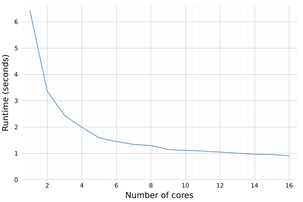
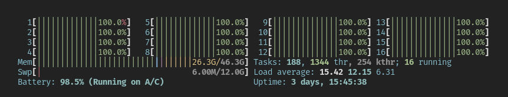

Generating 1 Billion Fake People with Julia
In a recent MotherDuck blog post, the author generated 1 billion fake people records using Python in order to analyze the data with DuckDB. I suspect the point of the article was to showcase how awesome duckdb is at handling large amounts of local data, but it did spend the majority of its time explaining the data generation process, which made for a fun read.
One of the more interesting tidbits from the article was:
I used the GNU Parallel technique discussed above with a hefty m6i.32xlarge instance on Amazon EC2, though generated a billion people in 1k parquet files. This took about 2 hours to generate.
Yikes, that’s a lot of firepower! That machine comes with 128 vCPUs and 512 GiB RAM, and costs about $6 an hour. So pretty hefty indeed.
Being a big fan of Julia, I decided to see what it would be like to generate such a dataset with Julia. More concretely, I wanted to see if I can use less resources (only my laptop) and have the process run in significantly less time. Not only that, I thought it be fun to explore the various modes of concurrency (multi-threading, multi-processing, async, etc) Julia offers.
The results were initially disappointing, as I’ll explain below, but in the end I did get that nice speed-up I was looking for.
The Details
The original post has the full details, but I’ll go over the basic details here. A person record consists of the following randomly generated fields:
- id
- first_name
- last_name
- email
- company
- phoneUsing the Python Faker library to generate the data and GNU Parallel to parallelize the operation, the author created 1,000 parquet files with 1 million records each before populating a duckdb database for further analysis.
Julia: First Attempt
Luckily, Julia has its own Faker.jl package. Using it is as simple as:
using Faker
Faker.first_name()"Wilfredo"Instead of putting all the fields in a dictionary, I created a struct instead:
struct Person
id::String
first_name::String
last_name::String
email::String
company::String
phone::String
endAside from being a natural thing to do in Julia, this ended up being a really handy vehicle for populating a DataFrame, as we’ll see in a moment.
In order to construct the Person object, we have the following function, which is essentially the same as in the Python version in the original post:
function get_person()
person = Person(
Faker.random_int(min=1000, max=9999999999999),
Faker.first_name(),
Faker.last_name(),
Faker.email(),
Faker.company(),
Faker.phone_number()
)
return person
end
get_person()Person("8429894898777", "Christin", "Gleason", "Archie99@yahoo.com", "Mante, Hilll and Hessel", "1-548-869-5799 x26945")This approach clearly suffers from the same deficiency as the original in that the generated email address bears absolutely no semblance to the generated first and last names. But that’s ok, we’re just making up data for mocking and testing purposes anyhow.
To create an array of Persons, we can use a comprehension:
list_of_five = [get_person() for _ in 1:5]5-element Vector{Person}:
Person("502327436522", "Simon", "Lind", "Franklyn.Satterfield@yahoo.com", "Rutherford-Barton", "054.718.0236")
Person("1988647737198", "Charlott", "Jacobs", "Walter.Ziemann@hotmail.com", "Towne, Gorczany and Brekke", "839-605-0245 x477")
Person("3335059941285", "Glory", "Brakus", "Nienow.Cassandra@lh.net", "Schuppe, Powlowski and Powlowski", "(122) 872-3081 x3643")
Person("4996530776723", "Hedwig", "Pfannerstill", "wSchamberger@hg.net", "Langosh Group", "(594) 274-0196 x72486")
Person("2217875886672", "Coletta", "Effertz", "Whitley.Bechtelar@mz.org", "Rippin Inc", "991.601.1323")Notice how we get a Vector of Persons… this is partially where that cool thing happens. Placing that vector in a DataFrame constructor creates a dataframe object for us without any hassle at all:
using DataFrames
df = DataFrame(list_of_five)5×6 DataFrame
Row │ id first_name last_name email company phone
│ String String String String String String
─────┼──────────────────────────────────────────────────────────────────────────────────────────────────────────────────────────────────
1 │ 502327436522 Simon Lind Franklyn.Satterfield@yahoo.com Rutherford-Barton 054.718.0236
2 │ 1988647737198 Charlott Jacobs Walter.Ziemann@hotmail.com Towne, Gorczany and Brekke 839-605-0245 x477
3 │ 3335059941285 Glory Brakus Nienow.Cassandra@lh.net Schuppe, Powlowski and Powlowski (122) 872-3081 x3643
4 │ 4996530776723 Hedwig Pfannerstill wSchamberger@hg.net Langosh Group (594) 274-0196 x72486
5 │ 2217875886672 Coletta Effertz Whitley.Bechtelar@mz.org Rippin Inc 991.601.1323That’s pretty neat!
Anyhow, with our basic functionality all set up, it’s time to do some light benchmarking to get a sense of how this code will perform. I started off small by generating only 10,000 records:
using BenchmarkTools
@btime [get_person() for _ in 1:10_000] |> DataFrame;6.531 s (5158878 allocations: 253.88 MiB)Oof, that result is not very comforting – taking 6.5 seconds just for 10,000 records does not bode well. Assuming linear scaling (which we probably can’t), it would take 6.5 * 100,000 seconds, or roughly 180 hours, to run the full thing.
At this point, I’m already thinking this whole idea is dead in the water, but was curious if a solution existed and decided not to give up yet and keep exploring options.
Multi-threading
The first tool in the arsenal to reach for in such a situation is probabably is multi-threading. Actually, the first tool to reach for is proper profiling, but when it comes to parallelizing code that is not ours, I would try multi-threading before exploring multi-processing or async.
Julia has a really handy macro Threads.@threads that you can stick in front of a for loop to parallelize it. But using Base Julia to handcraft the threaded population of a vector is a bit clunky, in my opinion, thus I opted for the excellent ThreadsX.jl package, which makes this particular task a breeze. In essence, it parallelizes certain Base functions (such as sum, reduce, map, collect, etc.) and all one needs to do is simply put ThreadsX. in front of the function. In our case, it looks like this (with the benchmark result below):
using ThreadsX
@btime ThreadsX.collect(get_person() for _ in 1:100_000) |> DataFrame;1.072 s (5140629 allocations: 258.32 MiB)Ok so that’s a little better, but running 12 threads and getting a 6x speed-up is not that great. More importantly, by our assumed linear scaling logic, the full 1 billion record run would still take approximately 30 hours on my laptop, just to generate the data, nevermind serializing it to disk.
A quick benchmarking aside
My laptop has 8 physical / 16 logical cores. For some reason I set the default number of threads to 12… I honestly don’t know why. Perhaps I was thinking “let’s leave some for the others” ¯\_(ツ)_/¯.
Now it’s true that a lot of workloads won’t take advantage of all logical threads that are supposedly available, thus one is essentially bound to the number of physical cores, but some workloads might take advantage of those extra threads. So to be thorough, I ran the following benchmarks with 1 through 16 cores.
I saved my code to a file named fake_naive.jl:
using BenchmarkTools
# --snip--
print(Threads.nthreads(), "\t\t")
@btime ThreadsX.collect(get_person() for _ in 1:10_000) |> DataFrame;and a short bash script as follows:
#!/bin/bash
printf 'Num Threads\tBenchmark Results\n'
for i in $(seq 1 16)
do
# start a julia process with i threads
julia -t "$i" -e 'include("fake_naive.jl")'
doneRunning it gave the following results:
Num Threads Benchmark Results
1 6.422 s (5146142 allocations: 256.55 MiB)
2 3.361 s (5146774 allocations: 256.92 MiB)
3 2.443 s (5141482 allocations: 257.37 MiB)
4 1.990 s (5149584 allocations: 257.76 MiB)
5 1.593 s (5138217 allocations: 257.54 MiB)
6 1.448 s (5140074 allocations: 257.62 MiB)
7 1.339 s (5141603 allocations: 257.70 MiB)
8 1.296 s (5141621 allocations: 257.69 MiB)
9 1.145 s (5139926 allocations: 258.29 MiB)
10 1.112 s (5137139 allocations: 258.15 MiB)
11 1.087 s (5146978 allocations: 258.64 MiB)
12 1.050 s (5142290 allocations: 258.40 MiB)
13 1.005 s (5137553 allocations: 258.16 MiB)
14 966.497 ms (5139312 allocations: 258.26 MiB)
15 955.672 ms (5147540 allocations: 258.66 MiB)
16 906.340 ms (5140219 allocations: 258.30 MiB)with the plotted version:

This is interesting. Clearly we see diminishing returns as we increase the number of threads past 8 or so, nevertheless there is a 30% speed improvement going from 8 threads to 16 threads, at least according to this benchmark.
Once again, assuming linear scaling, we can expect 16 threads to run in 0.90634 / 6.422 * 180 = 25.5 hours. Not nearly good enough!
Finishing the naive code
Despite knowing that my current approach is a losing battle, I wrote a function that generates the data and saves it to parquet files, in order to test out IO as well:
using Parquet2: writefile
function save_the_people_sync(num_people, num_files)
for i in 1:num_files
file_num = string(i, pad=ndigits(num_files))
file_loc = "./data/outfile_$(file_num).parquet"
df = ThreadsX.collect(get_person() for _ in 1:num_people) |> DataFrame
writefile(file_loc, df; compression_codec=:snappy)
end
endalong with a second async version:
function save_the_people_async(num_people, num_files)
@sync for i in 1:num_files
file_num = string(i, pad=ndigits(num_files))
file_loc = "./data/outfile_$(file_num).parquet"
df = ThreadsX.collect(get_person() for _ in 1:num_people) |> DataFrame
@async writefile(file_loc, df; compression_codec=:snappy)
end
endThe idea behind the @async code above is that while datasetn+1 is being generated, datasetn is being written to disk. At least in theory.
Benchmarking the 10K records with 10 file writes (using 16 threads this time)
@btime save_the_people_sync(10_000, 10);
@btime save_the_people_async(10_000, 10);gave the following results:
11.598 s (52145292 allocations: 2.57 GiB)
11.018 s (52179590 allocations: 2.57 GiB)So the async stuff doesn’t really have much of an effect, at least for 10K records. Trying it out with 100K records results in:
109.919 s (521194490 allocations: 25.58 GiB)
111.094 s (521135072 allocations: 25.58 GiB)Hmm… attempting to write bigger data asynchronously while using 16 threads to generate it actually resulted in a slight slowdown.
I tried one more thing, because I was maybe over-subscribing my CPU – I bumped my threads down to 12 again and got 124.67s for the non-async and 123.13s for the async version. Clearly the async wasn’t helping much. Though we did get some confirmation that, for this use case, it makes sense to max out the number of available threads, seeing as how lowering the thread-count did result in a ~12 second slowdown.
In any case, it was time to move on.
Diving into Faker’s Internals
Clearly doing a, more or less, 1-1 translation to Julia was not working. I posted my initial findings on the Julia Slack, and one user’s response inspired my next step:
… I guess that the runtime is dominated by Faker, is it optimized for massive fake generation at all?
I started looking into Faker.jl’s internals and noticed a couple of things: it was not exactly idiomatic Julia and the API did not explicitly support passing in an argument for number of records generated (at least that I could observe). In other words, you have to call code like this:
last_name = Faker.last_name()
email = Faker.email()
company = Faker.company()and not like this:
N = 1_000_000
last_names = Faker.last_name(N)
emails = Faker.email(N)
companies = Faker.company(N)Meaning with each function call, you can only produce one record at a time. If you wanted to generate 1 million records, you would have to do 1 million function calls. And the way you’d do that is with a loop or comprehension, as I did above. But these million function calls might be more expensive than necessary.
The first thing I noticed about Faker.jl is that the data that it samples from, such as actual first and last names, is stored as text in YAML files, which makes sense. And for items such as email addresses and phone numbers, it stores a kind of pattern which then gets translated by Julia functions into (randomly generated) text.
For instance, the name.yml file contains this:
en:
faker:
name:
male_first_name: [Aaron, Abdul, Abe, Abel, Abraham...]
female_first_name: [Abbey, Abbie, Abby, Abigail, Ada...]
first_name:
- "#{female_first_name}"
- "#{male_first_name}"
last_name: [Abbott, Abernathy, Abshire, Adams...]
...The function definitions for first names are:
male_first_name()::String = executor(data["faker"]["name"]["male_first_name"])
female_first_name()::String = executor(data["faker"]["name"]["female_first_name"])
function first_name(genere::String="None")::String
if(cmp(genere, "M") == 0)
return male_first_name()
elseif(cmp(genere, "F") == 0)
return female_first_name()
end
endThe data variable above is a dictionary holding all the data and patterns. When the package is first loaded, data is initialized as a global variable that is an empty dictionary of type Dict{Any, Any} and is then populated with the contents of the YAML files. It being a non-constant global variable may have something to do with the performance issues – one of the main rules of writing performant Julia is don’t use non-constant untyped global variables.
In any case, calling
Faker.data["faker"]["name"]["female_first_name"]simply returns a vector of names:
4272-element Vector{String}:
"Abbey"
"Abbie"
"Abby"
"Abigail"
"Ada"
⋮
"Zoraida"
"Zula"
"Zulema"
"Zulma"and all the executor function does is pick a name at random (though that’s not all it does, not for other types of data):
Faker.executor(Faker.data["faker"]["name"]["female_first_name"])"Estela"Checking this function for type stability with @code_warntype shows that it’s not type stable, though again I’m not sure if that’s a problem here (it may be, but I’d have to do some more testing, which I haven’t had the time to do).
Anyhow, this gave me an idea and I decided to run some more benchmarks.
The Revelation
To isolate the impact of just Faker.first_name() being called a million times, I ran the following:
@btime [Faker.first_name() for _ in 1:1_000_000]; 75.036 s (58000002 allocations: 2.84 GiB)My idea was to see if sampling from a vector of names using Julia’s rand function was perhaps faster. To do that, I had to concat the male and female first name vectors and then sample that new vector:
function get_first_names(n::Int)
first_names_female = Faker.data["faker"]["name"]["female_first_name"]
first_names_male = Faker.data["faker"]["name"]["male_first_name"]
first_names_all = vcat(first_names_female, first_names_male)
return rand(first_names_all, n)
endBenchmarking this function yielded quite the surprise:
@btime first_name = get_first_names(1_000_000); 4.195 ms (5 allocations: 7.67 MiB)Wow.
Four milliseconds vs 75 seconds. That is an almost 18,000x speed-up! And notice the allocations and memory usage as well: 5 allocations vs 58 million, and ~8MiB vs 2.84GiB.
This was the magic sauce I had been looking for all along.
Julia: Second Attempt
I won’t go into many more details of the Faker.jl internals because a) I’m still getting to know the package, and b) I’m not sure they’re all that relevant or interesting for the purpose of this write-up (perhaps another blogpost).
I’d like to take a moment though to say that I sincerely hope this post does not come off as harsh or unduly critical of Faker.jl and its author. For one, I admire anyone who spends their free time writing open-source software, and in the case of Faker.jl, it fills a gap in the Julia ecosystem that, to my knowledge, no one else has stepped up to fill. Moreover, it has very nice documentation, albeit simple (and appropriately so). And last but far from least, the author appears to be kind and friendly, which counts for a lot in my book.
The next step was to write my own functions for each of the Person fields and benchmark them against the package-provided equivalents.
id
This is perhaps the simplest one, it’s just using rand to sample from a range. In the original Python version, there was no requirement to have the id field as a string (though if I was designing that database and using random integers, I would be sure to turn them into strings and left-pad with zeros).
get_id(n::Int) = rand(1000:9999999999999, n)last_name
This one is almost the same as the first_name function, only we don’t have to concatenate two vectors together.
function get_last_names(n::Int)
last_names = Faker.data["faker"]["name"]["last_name"]
return rand(last_names, n)
endThis one required a little bit more work. Instead of relying on the internal package mechanism to generate fake email addresses, I rolled my own.
In the first function, closures provide each of the possible email formats. A closure is randomly selected, and the function arguments, first_name and last_name, are used to generate a username.
function determine_username_format(first_name::String, last_name::String)
# create closure for each type of format
_first_last(first_name, last_name) = first_name * "." * last_name
_last_first(first_name, last_name) = last_name * "." * first_name
_first_num(first_name, last_name) = first_name * string(rand(1:99))
_flast(first_name, last_name) = first(first_name, 1) * last_name
# randomly sample each format and return, not just function, but result from function
formats = (_first_last, _last_first, _first_num, _flast)
_email_format(first_name, last_name) = rand(formats)(first_name, last_name)
return _email_format(first_name, last_name) |> lowercase
endNote that this function only works on scalar inputs and will be broadcast to vectors of first and last names later. Also, note how _first_num takes two arguments but only uses one – we need that to satisfy our mini _email_format API. If _first_num was defined with only the first_name argument, and that function was randomly selected for any given iteration, it would bomb. Thus we leave it with the same args as all the other inner functions. I know it feels hacky (and there is probably a name for this technique) but it simplifies the code.
Moving on, although there are more than three email domains (in the real world and in the Faker packages), I kept things simple and only used the main three that each account for ~17% of market share (according to my quick googling on the topic). I know this is cheating a little bit, but I honestly ran out of patience and figured this was good enough to get an idea of how fast this code can go.
determine_email_domains(n::Int) = rand(("@gmail.com", "@yahoo.com", "@hotmail.com"), n)Finally, we take the vectors of names that are already generated and use them to call the two helper functions above (using the . notation to broadcast the determine_username_format function).
function get_emails(first_names::Vector{String}, last_names::Vector{String})
n = size(first_names, 1)
@assert n == size(last_names, 1) "first and last name vectors must be same size"
formats = determine_username_format.(first_names, last_names)
domains = determine_email_domains(n)
return formats .* domains
endYou’ll notice that this is a deviation from the original post in that people’s names and their email addresses are now consistent since their names were used to generate their emails. This is an enhancement that is partly born out of convenience (we’re already generating first and last names, why spend more time generating more?) and partly because if we’re getting our hands dirty with hand-tuned optimization, we might as well make the dataset slightly more realistic. So we lose some (only three domains) and win some (email addresses based off the names).
I haven’t tested whether the closures are more helpful here, instead of regular functions, but I’m sort of keeping them as is mainly to keep the code somewhat organized. They also don’t need to start with an _ but, again, helps me visually parse them a little easier.
company
Similar to the email functions above, I use closures to hold the pattern for the various company name formats, and then randomly select one of them to generate the pattern. Also, the get_last_names function gets re-used (yay).
function get_companies(n::Int)
suffixes = (" Inc", " and Sons", " and Daughters", ", LLC", " Group")
_last_suffix(ln1, ln2, ln3) = ln1 * rand(suffixes)
_last_last(ln1, ln2, ln3) = ln1 * "-" * ln2
_last_x3(ln1, ln2, ln3) = ln1 * ", " * ln2 * " and " * ln3
formats = (_last_suffix, _last_last, _last_x3)
last_names1 = get_last_names(n)
last_names2 = get_last_names(n)
last_names3 = get_last_names(n)
_company_name(ln1, ln2, ln3) = rand(formats)(ln1, ln2, ln3)
return _company_name.(last_names1, last_names2, last_names3)
endOnce again, the inner functions don’t all use the given arguments, but we need that for the mini _company_name API.
phone
This one was kept pretty much as is from the package, and that’s fine because as we’ll see its performance is just fine as it is.
function get_phone_numbers(n::Int)
return [Faker.phone_number() for _ in 1:n]
endSave All the People
Putting it all together, we get this:
function get_the_people(n::Int)
df = DataFrame(
id = get_id(n),
first_name = get_first_names(n),
last_name = get_last_names(n),
company= get_companies(n),
phone_number = get_phone_numbers(n),
)
df.email = get_emails(df.first_name, df.last_name)
return df
endAs you can see, we dispensed with the Person struct since we don’t really need it. Instead, we generate a DataFrame directly. And because we need our first and last names before we can generate our email addresses, the email field comes last.
Finally, we have actual data generation and saving to parquet files.
function save_all_the_people(num_people::Int, num_files::Int)
for i in 1:num_files
file_num = string(i, pad=ndigits(num_files))
file_loc = "./data/persons_$(file_num).parquet"
df = get_the_people(num_people)
writefile(file_loc, df; compression_codec=:snappy)
end
endNow it’s time to benchmark again.
The Final Benchmarks
Before we benchmark the big one above, we’ll do some micro-benchmarking and test the functions that create each of the fields:
## benchmarks
const N = 1_000_000
# get_emails depends on other fields being generated first,
# which needs to be done outside of benchmarking
first_names = get_first_names(N)
last_names = get_last_names(N)
@btime get_id($N);
@btime get_first_names($N);
@btime get_last_names($N);
@btime get_emails($first_names, $last_names);
@btime get_companies($N);
@btime get_phone_numbers($N);
@btime get_the_people($N); 3.186 ms (2 allocations: 7.63 MiB)
4.270 ms (5 allocations: 7.67 MiB)
4.134 ms (3 allocations: 7.63 MiB)
309.268 ms (5747839 allocations: 262.10 MiB)
80.762 ms (2331987 allocations: 128.40 MiB)
367.853 ms (3000002 allocations: 187.66 MiB)
812.161 ms (11082578 allocations: 645.02 MiB)Looks like we’ll be spending the most time generating emails and phone numbers. We’ll see if we can cut that down eventually.
Testing the big one:
@btime save_all_the_people(N, 10); 16.852 s (170856196 allocations: 10.43 GiB)Ok, not bad, generating 10 million people and saving to disk takes 17 seconds. But let’s see if we can do better. We’ll try multi-threading again, but this time just the @threads macro in front of the for loop should be good enough:
function save_all_the_people_threaded(num_people::Int, num_files::Int)
Threads.@threads for i in 1:num_files
file_num = string(i, pad=ndigits(num_files))
file_loc = "./data/persons_$(file_num).parquet"
df = get_the_people(num_people)
writefile(file_loc, df; compression_codec=:snappy)
end
endWe’ll go for 16 threads right out of the gate:
@btime save_all_the_people_threaded(N, 10); 4.709 s (170854140 allocations: 10.43 GiB)Not bad at all, though we’re only getting a 3x speed-up. Let’s try with 100 million:
@btime save_all_the_people_threaded(N, 100);Here’s a screenshot of htop while this is happening btw: 
Benchmark result of 100 million people:
94.074 s (1708559591 allocations: 104.34 GiB)Ok interesting, looks like we can’t assume linear scaling after all! By that logic, 100 million should have taken about 50 seconds, but it actually took about twice that.
Not to belabor the point, doing an actual run with 1 billion people (1,000 parquet files) took about 23 minutes!
Concluding Thoughts
Turns out we can indeed speed up the generation of fake data by quite a bit using plain Julia and a moderately powered laptop.
I might explore further optimization opportunities and do some proper profiling in future posts. For completeness, it would behoove me to play around with multi-processing, which I didn’t here since it’s more of a hassle and I doubt it would yield any appreciable performance improvement over the threaded version. I suspect there are significant gains to be made just hand-tuning the serial code, especially the string handling in the get_emails and get_phone_numbers functions.
I can imagine someone arguing, “but you probably spent more time researching this issue and writing custom code… surely $12 and 2 hours on an EC2 makes more sense for a one-time run like this.”
Absolutely. I definitely spent more than 2 hours looking into Faker.jl and coming up with my own solution. And if we were just trying to get a job done, that would be the way to go. But… where’s the fun in that?
This way, we learned a thing or two (or at least I did). And most importantly we are now armed with enough knowledge to make a PR or two to the Faker.jl repo and have the whole Julia and data communities benefit. If time allows, that is indeed what I’ll be looking to do.
Lastly, I also hope that any newbie Julia programmers or various data practioners (data enginners, data scientists, data analysits) will benefit from reading this post and learn a thing or two themselves.
Cheers and happy coding :)
Appendix: Software and Hardware
The code in this post was run with Julia 1.8.5 and the following package versions:
using Pkg
Pkg.status()Status `~/Dev/Julia/FakePeople/Project.toml`
[a93c6f00] DataFrames v1.5.0
[0efc519c] Faker v0.3.5
[98572fba] Parquet2 v0.2.9
[ac1d9e8a] ThreadsX v0.1.11with the following hardware/software specs:
versioninfo()Julia Version 1.8.5
Commit 17cfb8e65ea (2023-01-08 06:45 UTC)
Platform Info:
OS: Linux (x86_64-linux-gnu)
CPU: 16 × AMD Ryzen 7 PRO 4750U with Radeon Graphics
WORD_SIZE: 64
LIBM: libopenlibm
LLVM: libLLVM-13.0.1 (ORCJIT, znver2)
Threads: 12 on 16 virtual cores
Environment:
JULIA_NUM_THREADS = 12
JULIA_EDITOR = code